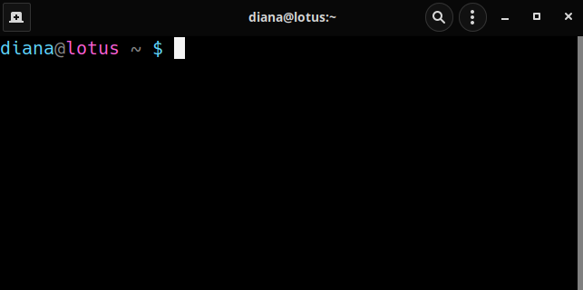

Intro a la Terminal de
Comandos de Linux
Diana García Cortés
Sistema Operativo
Software principal, que gestiona los recursos de hardware, se ejecuta en modo privilegiado y provee servicios a las aplicaciones.
Software Libre
Respeta la libertad de los usuarios y la comunidad.
Los usuarios tienen la libertad de ejecutar, copiar, distribuir, estudiar, modificar y mejorar el software.
- Libertad de ejecutar el programa como se desee, con cualquier propósito
- Libertad de acceso al código fuente: posibilidad de estudiar y modificar el programa.
- Libertad de redistribuir copias para ayudar a otros.
- Libertad de distribuir copias de sus versiones modificadas a terceros.
Proyecto GNU/Linux
- Sistema Operativo completamente de software libre.
- Las herramientas son GNU, el kernel es Linux.
- Proyecto que inició desde 1984.
- Un sistema basado en Unix.
Algunos conceptos importantes
- Distribuciones
- Sistemas de archivos
- Manejadores de paquetes
Distribución GNU/Linux
Sistema Operativo con el kernel de Linux, herramientas y librerías de GNU, software adicional, sistema y manejador de ventanas y un entorno de escritorio.
Diferencias: Instalador utilizado, manejador de paquetes, aplicaciones incluidas, entorno de escritorio.
¿Qué distros conocen?
Sistema de archivos
Conjunto de normas y procedimientos para almacenar la información.
Sistema de almacenamiento de un dispositivo de memoria, que estructura y organiza la escritura, búsqueda, lectura, almacenamiento, edición y eliminación de archivos de una manera concreta.
- FAT (File Allocation Table o tabla de asignación de archivos)
(4GB - 8TB). Volumen de datos pequeño. USB y dispositivos móviles. - NTFS (New Technology File System)
Estándar para Windows desde Windows Vista. - APFS (Apple File System)
Apple en 2017 con High Sierra para unidades de estado sólido modernas. Siguiente generación de HFS+. - ext4
Estándar para sistemas Linux. Optimiza la gestión de archivos grandes y evita la fragmentación de manera más eficaz. Las particiones se pueden ampliar y reducir según sea necesario, e incluso durante el procesamiento. Volumen de 1 exabyte (aproximadamente 1 millón de terabytes).
¿Por qué nos importan los sistemas de archivos?
- Todos los sistemas operativos pueden leer y escribir en USBs (FAT)
- ¿Han instalado Linux en en una partición? ¿Windows puede ver los
archivos de Linux?
- NTFS no puede leer y/o escribir ext4
Filesystem Hierarchy Standard o FHS
Nació en 1994, mantenido por la Linux Foundation. https://computernewagedotcom.files.wordpress.com/2018/08/linux-jerarquia-directorios.png
https://computernewagedotcom.files.wordpress.com/2018/08/linux-jerarquia-directorios.png
Manejador de paquetes
Colección de herramientas de software que automatizan el proceso de instalación, actualización, configuración y eliminación de programas para un SO.
| Distribución | Manejador de paquetes | Herramientas |
|---|---|---|
| Debian, Ubuntu | dpkg | apt, aptitude |
| Ret Hat, open Suse, Fedora | RPM | apt4rm, zypp, yum, dnf |
| Arch Linux, Frugalware | Pacman | Makepkg |
|
Knoppix, Mint, Gentoo, OpenSUSE, Red Hat and Slackware |
Zero Install | 0install |
Conozcamos la terminal
Este es el prompt, listo para ejecutar instrucciones.
Conozcamos la terminal
Este es el prompt
diana: usuariolotus: hostname~: la ruta (directorio) donde estamos$: significa que nuestro intérprete de comandos o shell, es bash o GNU Bourne-Again shell
Estructura de los comandos
commando [opciones] [arg1] [arg2] ... [argn]
Las opciones y los argumentos dependen del comando que estemos ejecutando
Calentando
Comandos que no necesitan argumentos
- Print working directory. Dónde estamos
pwd - Nombre de usuario loggeado en la consola
whoami - El nombre del equipo
hostname - Fecha y hora en formato largo
date
Calentando
Comandos que no necesitan argumentos
- Muestra las variables de entorno
env - Info sobre nuestra sesión
who - Info sobre nuestro sistema
uname -a
Por default, nuestra shell imprime el resultado en la consola, se le
llama stdout o standard output stream. Para cambiarlo:
uname -a > sesion.txt
Esto se llama redirigir la salida.
Archivos texto plano
Solamente contienen texto. No Word.
Extensiones: .txt, .tsv, .csv, etc
Para verlos:
cat data_rentas.tsv
more data_rentas.tsv
less -S data_rentas.tsv
Comandos para manejar directorios y archivos
Listar los contenidos de un directorio
ls
ls -a
ls -al
ls -alh
ls -alht
ls -alht /bin
¿Cómo vemos todas las opciones?
man ls
ls --help
Hay carpetas que siempre existen:
.
El directorio actual..
Un directorio atrás~
Nuestra carpeta$HOME
En realidad no existen, son referencias a esas carpetas.
Un poco sobre rutas
Hay dos tipos
- Rutas relativa: define un archivo o directorio a partir del directorio donde nos encontramos.
- Rutas absoluta: define de forma única un archivo o directorio.
Siempre inician con
/, desde la raíz.
Comandos para manejar directorios y archivos
Cambiarnos de directorio
cd /home/[tu_username]/Desktop
cd ../Documents
cd ../../../tmp
Utilicen siempre el TAB y practiquen mucho
Comandos para manejar directorios y archivos
Crear directorios o carpetas
cd ~/Desktop
mkdir carpeta1
mkdir carpeta1 carpeta2
También se vale adentro de otras
cd ~/Desktop
mkdir ../Documents/padre
mkdir ../Documents/padre/hijo
mkdir -p ../Documents/madre/hija
Comandos para manejar directorios y archivos
Copiar y mover archivos y carpetas
cd ~/Desktop
touch nada.txt
cp nada.txt ../Documents/
mv nada.txt ../Documents/algo.txt
Para carpetas tiene que ser recursivo
cd ~/Desktop
mkdir carpeta3
touch carpeta3/archivo.txt
cp -r carpeta3 ../Documents/carpeta_copia
mv -r ../Documents/carpeta_copia carpeta_nueva
Comandos para manejar directorios y archivos
Borrar archivos y carpetas
OJO! No hay papelera de reciclaje
rm carpeta_nueva/archivo.txt
rmdir carpeta_nueva
Modo salvaje
rm -rf carpeta3
Ejercicio
- Ve a tu
$HOME - Crea un directorio con tu mes favorito del año.
- Sin moverte de directorio, guarda la salida del comando
dateen unarchivo llamadohoy.txtdentro de la carpeta que acabas de crear. - Sin moverte de directorio, copia la carpeta a tu escritorio con el nombre de tu animal favorito.
- Verifica que la carpeta haya sido creada.
- Sin moverte de directorio, mueve el archivo en ~/Desktop/[animal favorito]/hoy.txt a la carpeta de tu mes favorito con el nombre ejercicio.txt
- Borra las carpetas y los archivos que creamos.
Descarguen el siguiente archivo comprimido en zip: WWC.zip
O pueden descargar el .tar.xz desde la terminal
wget https://www.dropbox.com/s/j7syscpyu35ucpn/WWC.tar.xz?dl=0 -O WWC.tar.xz
tar -xvf WWC.tar.xz
grep
Nos permite buscar texto en archivos de texto plano.
Buscar una palabra en un archivo
grep arroz arroz_leche.txt
Buscar una palabra sin importar mayúsculas
grep -i Manzana tarta_manzana.txt
Con el número de línea y colores
grep -in --color calabaza mousse_calabaza.txt
Buscar la palabra completa
grep -inw Manzana --color tarta_manzana.txt
Si solo queremos contar cuántas veces aparece la palabra.
grep -c calabaza bund_cake_calabaza.txt
Si queremos contar en todos los archivos del directorio
grep -Rc canela .
O ver las líneas completas
grep -Rni --color canela .
Ejercicio
- ¿Cuántas películas del archivo
data_rentas.tsvfueron rentadas por mujeres? - ¿Por cuántos días rentaron la película Coyote Ugly?
- ¿Cuántas veces rentaron Iron Man?
- ¿Cuántas películas tienen "The" en su título?
Un poco más sobre archivos de texto tabulares
Para saber cuántas líneas y cuántas palabras tiene un archivo
wc data_rentas.tsv
wc -l data_rentas.tsv
Linux es muy bueno para trabajar con archivos tabulares
cut -f 5 data_rentas.tsv
cut -f 5 data_rentas.tsv | less
Regresando al ejercicio: ¿Cuántas películas tienen "The" en su título?
grep -w The data_rentas.tsv
cut -f 5 data_rentas.tsv | grep -w The
find
Sirve para encontrar archivos en nuestra computadora
Por nombre
find . -name iris.txt
El . representa el directorio en el cual queremos buscar el archivo
Todas las imágenes .jpg en nuestro $HOME
find /home/diana -name *.jpg
Las que fueron modificadas en los últimos 3 días
find /home/diana -name "*jpg" -mtime 3
También podemos buscar directorios
find /home/diana -name WWC -type d
Extras
Aliases
Sobrenombres para comandos que son largos, a veces se nos olvidan o los utilizamos mucho.
Creamos un archivo llamado .bash_aliases en nuestro
directorio $HOME
alias ll="ls -lhta"
alias cl-out="ssh -p 5263 -X dgarcia@cluster.inmegen.gob.mx"
Cerramos y abrimos la consola o escribimos:
source ~/.bash_aliases
Procesos
El linux cada tarea que se esté ejecutando es un proceso, que puede distinguirse por su process ID o PID.
ps aux
ps aux | grep chrome
htop
Si un proceso deja de responder, tiene que morir
kill PID
Y si se rehúsa, lo forzamos
kill -9 PID
Usuarios en Linux
Todos tienen UserID (UID) y pertenecen, al menos, a un grupo de usuario, con GroupID (GID) único.
- Usuario root, superusuario, administrador: UID=0. Privilegios sobre todo el sistema, acceso a todos los archivos y directorios.
- Usuarios especiales: Asociados a cuentas o servicios del sistema, no tienen inicio de sesión, se general al instalar Linux o su aplicación asociada. UID entre 1 y 100.
- Usuarios normales: Normalmente tienen directorio de trabajo, privilegios solo en su directorio de trabajo o HOME, UID superior a 500.
xkcd

Permisos
Tres tipos de permisos
- Lectura (read): Ver contenido de un archivo o directorio.
- Escritura (write): Modificar el archivo. Agregar, sobreescribir o borrar en archivo o directorio
- Execución (execute): Ejecutar un archivo. En directorios, acceder a él y permitir que otros programas puedan acceder a él
Tres tipos de acceso: user (u), group (g), others(o)
Cambiamos los permisos con el comando chmod
Damos permisos de ejecución al usuario
chmod u+x hello.sh
Quitamos permisos de lectura al grupo
chmod g-r hello.sh
Mas sobre archivos tabulados
Gracias!